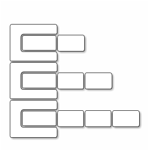
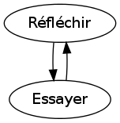
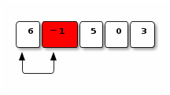
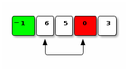
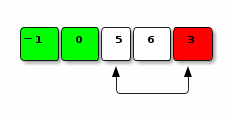
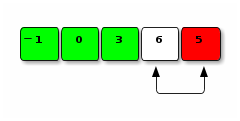

Created: 2017-05-17 Wed 01:36
boolean, pour les tests (if, for(;;), while())==, !=, <, <=, >, >=!&&, ||, ^
Le résultat est une valeur de type boolean : true / false
if((un > test)|| !(un <= autre)){
instructionsSiTestVrai; // expression -> true
//...
} else { // bloc else facultatif
instructionsSiTestFaux;
//...
}
if(!attention);{
instructionsToujoursExecutees;
//...
}
; est une instruction (vide) légale. Elle sera (faute de bloc ({}) la seule sur laquelle portera le branchement conditionnel.
forfor(i=0; i < 10; ++i){
//instructions executees 10 fois
}
On aurait pu aussi bien utiliser i!=10, car on sort de la boucle lorsque i vaut 10 (donc i<10 et i!=10 cessent d'être vrai).
for( *initialisation* ; *condition* ; *fin de boucle*){
// instructions à répéter
}
i = i+2 ou i+=2, i = i-1 ou i-=1 ou --i ou i--/* on ne fait la boucle que jusqu'a la racine */
for (i = 2; i * i <= n; i++) {
if (n % i == 0) {
div = i;
}
}
for (i = 3; (i * i <= n) && (n % i != 0); i += 2) {
/* rien du tout */
}
whilewhile((un < test) || !(un >= autre)){
instructions;
}
Tant que le test est vrai, on exécute les instructions.
int i, j;
for(i=0 , j=0; (i+j) < 42; ++i , j=j +2){
//...
}
On peut tester avant ou après l'exécution de la boucle :
public static void main(String[] args) throws IOException {
char c;
do {
// code du programme ici
// qu'on veut executer tant que l'utilisateur le souhaite
System.out.println("Voulez-vous recommencer O)ui/N)on: ");
/* lecture d'un seul caractere, sans Scanner */
c = (char) System.in.read();
/* sauter le caractere \n */
System.in.skip(1);
} while (c == 'O');
}
Sauf pour les types primitifs, il faut instancier 1 les valeurs que l'on veut stocker dans les variables.
On instancie une nouvelle valeur avec new .
int [] tab; // tableau d'elts qui sont de type int
int [][] tab2D; // tableau d'elts qui sont de type int []
int [][][] tab3D;//tableau d'elts de type int [][]
monTableau= new TYPE[ TAILLE ];
La régularité des règles (syntaxiques, sémantiques) permet la composition:
Chaque case du tableau de tableau ([][]) est un tableau ([]) qui peut avoir une taille différente de celle des autres.
int[][] tab = new int[3][];
for(int i=0;i<3;i++){
tab[i] = new int[i+2];
}

On la connaît déjà ? (à la création -*instanciation*-)
public static void main(String[] args){
// args est un tableau de String
// mais quelle est sa taille ?
}
Découpage en fonctions → le code qui manipule (parcourt) un tableau n'est pas forcément celui qui l'a instancié.
Attribut length
int[] tab={0,1,2};
System.out.println(tab.length); // 3
utilisation d'une méthode length ()
String line= sc.nextLine();
System.out.println(line.length());
public static TYPE nomFonction(TYP_1 ARG_1, \dots, TY_n ARG_n) { // interface
//Liste d'instructions ; // corps
return EXPR;
}
main ).() lorsqu'il n'y a pas de paramètres.
Faire une fonction public static int somme(int n) qui calcule \(\sum_{i=1}^n\) .
La tester !
Tests → penser aux cas limites : quel est le domaine de définition des paramètres ?
Pour une meilleure réutilisabilité on préférera découpler les aspects orthogonaux (i.e. calcul et affichage). → la fonction retourne le résultat au lieu de l'afficher directement.
Le découpage d'un programme en modules réutilisables est un art.
Les variables déclarées dans une fonction ne sont pas visibles dans les autres. En fait elles, n'existent qu'au sien du bloc d'accolade dans lequel elles ont été déclarées (ou dans l'implémentation de la fonction dont elles sont les arguments).
public static void main(String[] args) {
int i = 0;
modifie();
System.out.println("i vaut " + i);
/* explication: c'est pas le meme i */
}
public static void modifie() {
int i;
/* on modifie i */
i = 34;
}
public static void main(String[] args) {
int n;
Scanner sc = new Scanner(System.in);
n = sc.nextInt();
if (n % 2 == 0) {
int i = n;
i++;
} else {
int i = - n;
i--;
}
System.out.println("n vaut: " + n
+ " et i vaut: " + i);
System.out.println("Et je continue");
}
if (n % 2 == 0) {
int i = n;
i++;
} else {
int i = - n;
i--;
}
System.out.println("n vaut: " + n
+ " et i vaut: " + i);
scope2/Scope2.java:18: error: cannot find symbol
+ " et i vaut: " + i);
^
symbol: variable i
location: class Scope2
1 error
Besoin de variables de classe (static) ou d' instance (cf. infra, après la pause).

On déplace les éléments d'un tableau par échanges. Trouver le minimum n'est pas une opération élémentaire.




TRI(TABLEAU d’ENTIER tab) :=
ENTIER nb = longueur de tab
ENTIER i, indMin
POUR i = 0 ... (nb-1)
| indMin = indice du minimum de tab[i...(nb - 1)]
| échanger tab[i] et tab[indMin]
FIN POUR
ENTIER CHERCHERMIN(TABLEAU d’ENTIER tab
, ENTIER deb, ENTIER fin) :=
ENTIER i
ENTIER indice = deb
POUR i = deb+1 ... fin
| SI (tab[i] < tab[indice])
| | indice = i
| FIN SI
FIN POUR
RENVOYER indice
public static void tri(int[] t) {
int i, tmp, indMin;
int l = t.length;
for (i = 0; i < l; i++) {
/* plus petit element "suivant" */
indMin = indiceMinimum(t, i, l-1);
/* echange */
tmp = t[indMin];
t[indMin] = t[i];
t[i] = tmp;
}
}
/* cherche le minimum dans un tableau
* ENTRE les indices debut et fin.
* Retourne l'INDICE ou il se situe. */
public static int indiceMinimum(int[] tab, int debut
, int fin) {
int indice = debut;
int i;
/* optimisation: on commence a debut + 1 */
for (i = debut + 1; i <= fin; i++) {
if (tab[i] < tab[indice]) {
indice = i;
}
}
return indice;
}
public static void main(String[] args){
int tab={ 6, -1, 5, 0, 3};
int i;
for(i= 0; i != tab.length; ++i){
System.out.print(tab[i]);
}
System.out.println();
tri(tab);
for(i= 0; i != tab.length; ++i){
System.out.print(tab[i]);
}
}
Comment manipuler de façon cohérente des ensembles de données de tous types ?
→ définir un nouveau type de données définissant les données manipulées et les traitements de celles-ci.
class Point {
int x;
int y;
}
x et y sont les attributs.
Point est le nom de la classe définie.
Point p; p est un objet de classe Point.x et y
p.x= 3;System.out.println(p.y);
Remarque : Les tableaux sont des objets avec un attribut length (mais il est immuable → accessible en lecture seul).
new
Point() et Scanner() sont des constructeurs
System.in)
Si l'on affecte pas d'instance d'objet, la variable vaut null
class Point {
public int x;
public int y;
Point () {
x = 0;
y = 0;
}
Point (int xInit, int yInit) {
x = xInit;
y = yInit;
}
}
Utilisation :
Point p1 = new Point();
Point p2 = new Point(3,0);
Terminologie :
Scanner est une classe
Scanner sc = new Scanner(System.in);sc est un objet de type Scannersc.nextInt() est une fonction appelée sur un objet : c'est une méthode.Les classes définissent des attributs (= variables) et des méthodes (= fonctions) associées.
Pour les méthodes d'instance, celles qui manipulent les attributs des objets (instances), on n'utilise pas le mot clé static.
class Point {
//...
public void affiche() {
System.out.println("x:"+ x +", y:"+y);
}
}
Utilisation :
Point p= new Point(3,10);
p.affiche();
Les méthodes peuvent prendre des arguments et retourner une valeur (exactement comme les fonctions, la seule chose qui change dans la signature est l'absence du mot-clé static).
toString()
Il y a toujours une méthode toString() définie par défaut. C'est celle qui est utilisée pour concaténer avec une chaîne de caractère.
Par défaut, elle affiche notamment l'adresse de l'objet en mémoire (cf. tentatives d'affichages de tableaux).
On peut la redéfinir.
Dans les méthodes (d'instance) et les constructeurs, on peut utiliser le mot-clé this pour désigner l'objet courant.
this.x= 3;
Utile pour désambigüer.
class Point {
public int x;
public int y;
Point(int x, int y) {
this.x = x;
this.y = y;
}
static., mais pas par un objet mais par le nom de la classe :Classe.nomChampStatique= valeur;
Classe.nomMethodeStatique();
final.
MAJ_ET_UNDERSCOREpublic static final int NOMBRE_DE_JOUEURS = 2;
public class Main {
public static void main(String[] args) {
}
}
main est une méthode de classe (statique). Elle n'est liée à aucune instance en particulier.public ?
Pour chaque attribut private, on peut vouloir permettre l'accès en lecture et/ou en écriture :
class Point {
private int x;
//...
public int getX(){
return x;
}
public void setX(int x) {
this.x = x;
}
}
Encore une convention de nommage !
TYPE getXXX()void setXXX(TYPE v)public, elle doit porter le même nom (attention à la casse !) que le fichier (sauf l'extension .java).La décomposition en classes (comme en fonctions, méthodes) est un art essentiel de la réalisation de tout programme non trivial !
L'ennemi, c'est la complexité !
public class Horloge {
private int minutes;
private int heures;
Horloge() {
this.minutes = 0;
this.heures = 0;
}
Horloge(int h, int m) {
this.minutes = m;
this.heures = h;
}
public int getMinute() {
return this.minutes;
}
public int getHeure() {
return this.heures;
}
//...
}
public class Horloge {
//...
void addHeures(int h) {
this.heures = (this.heures + h) % 24;
}
void addMinutes(int m){
this.minutes = this.minutes + m;
this.addHeures((this.minutes / 60));
this.minutes = this.minutes % 60;
}
//...
}
public class Horloge {
//...
public String toString() {
String s = "";
if (this.heures < 10) {
s = s + "0";
}
s = s + this.heures + ":";
if (this.minutes < 10) {
s = s + "0";
}
s = s + this.minutes;
return s ;
}
}
public class Etrange {
public static void modifie(int nombre) {
nombre = 5;
}
public static void modifieA(int a) {
a = 26;
}
public static void main(String[] args) {
int a = 0;
System.out.println("n vaut: " + a);
modifie(a);
System.out.println("n vaut: " + a);
modifieA(a);
System.out.println("n vaut: " + a);
}
}
class Point {
public int x;
public int y;
Point(){
this.x = 0;
this.y = 0;
}
public String toString(){
return ("(" + x + "," + y + ")");
}
}
//...
public class Etrange2 {
public static void modifiePoint(Point monPt) {
monPt.x = 3;
monPt.y = 4;
}
public static void main(String[] args) {
Point p = new Point();
System.out.println(p);
modifiePoint(p);
System.out.println(p);
}
}
//...
public class Etrange2 {
public static void modifiePoint(Point monPt) {
monPt= new Point(3, 4);
}
public static void main(String[] args) {
Point p = new Point();
System.out.println(p);
modifiePoint(p);
System.out.println(p);
}
}
Par valeur (copie) ou par référence (modification de la variable passée en argument elle-même) ?
Par valeur !
Mais les variables "objets" sont en fait des références → on passe par valeur (recopie) une référence !